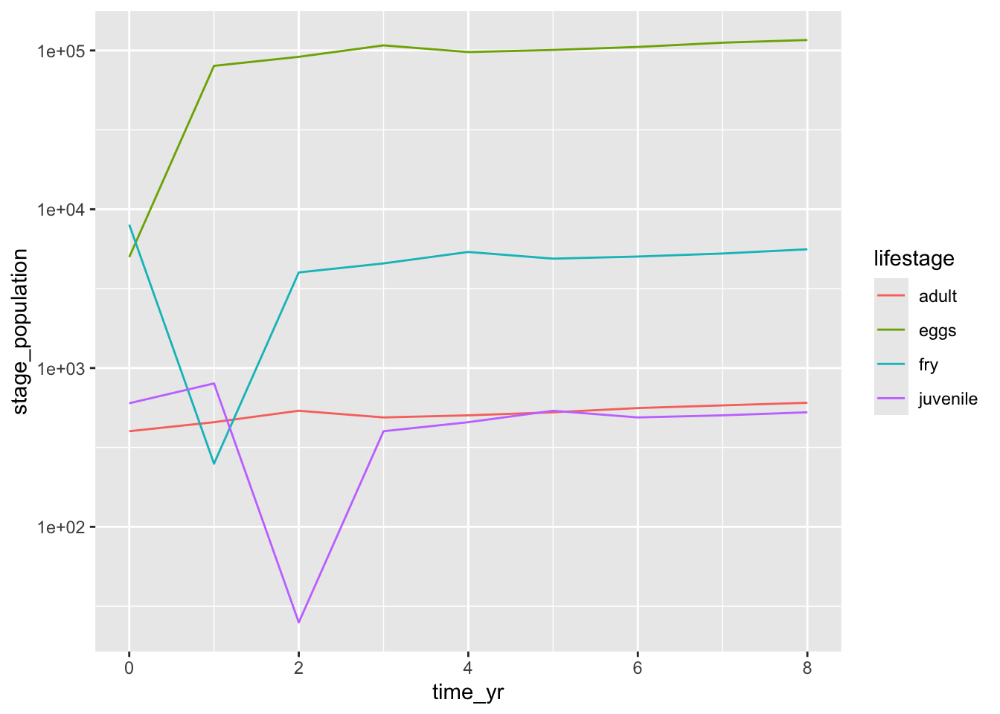

Fork then clone this repo to create a version-controlled R Project for Day 5
Part 0: Warm up - For loops revisited (Leslie Matrix)
Open the leslie_projection.Rmd file in docs/. All code shown below for Part 0 is in that file. You should be able to run it out-of-the-box. In EDS 212, we learned about Leslie matrices for projecting populations based on mortality and reproduction for different organism life stages. Let’s return to one example we checked out.
A population of fish we’re interested in has four life stages: eggs (E), fry (F), juvenile (J), breeding adult (A). You are told that annually:
Each breeding adult will produce, on average, 200 eggs
Recall, we are able to use the dot product (%*%) to estimate the population at the next year (we’ll draw this on the board to remember what it looks like).
The initial population structure is given by:
# Initial population structure (Roe, Fry, Juvenile, Adult): fish_year0 <-c(5000, 8000, 600, 400)# ------ WHAT HAPPENS HERE? ------ #time_yr <-seq(from =0, to =8, by =1)proj_year <-matrix(ncol =length(fish_year0), nrow =length(time_yr))proj_year[1, ] <- fish_year0for (i in2:length(time_yr)) { proj_year[i,] <- fish_leslie %*% proj_year[i-1,]}# -------------------------------- ## The rest is wrangling & visualization:colnames(proj_year) <-c("eggs", "fry", "juvenile", "adult")proj_df <-data.frame(time_yr, proj_year) %>%pivot_longer(cols =-time_yr, names_to ="lifestage", values_to ="stage_population")ggplot(data = proj_df, aes(x = time_yr, y = stage_population)) +geom_line(aes(color = lifestage)) +scale_y_log10()

Part 1: Testing functions with {testthat}
Create a new R Markdown file in your existing project (in docs/) saved as fun_testing.Rmd
Install the testthat package (install.packages("testthat"))
Install the devtools package (install.packages("devtools"))
Install the remotes packages (install.packages("remotes"))
As we develop algorithms, we’ll change our code. We want a way to automatically check our work to make sure it’s behaving as expected. The testthat package “tries to make testing as fun as possible.”
Unit test: A unit test is an automated check of a piece (“unit”) of your code
Let’s consider an example. We’re writing a function to find the mean value of each column, then return the lowest and highest mean calculated (in that order). We would expect:
The outcome to be a numeric vector of length 2
Where the first value in the vector is smaller than the second value in that vector
Write the function
Let’s write the function first, then create some accompanying tests to make sure they’re working.
mean_range <-function(df) { col_means <-apply(X = df, MARGIN =2, FUN = mean, na.rm =TRUE) # Returns column means as a vector col_mean_max <-max(col_means) # Looks for the maximum value in the vector col_mean_min <-min(col_means) # Looks for the minimum value in the vectorreturn(c(col_mean_min, col_mean_max)) # Prints the vector with minimum & maximum}# Try it out:mean_range(df = mtcars)
[1] 0.40625 230.72188
OK great. But we’re doing some work on this code, and we don’t want to have to try a bunch of different things manually each time we change it to see how it breaks. Instead, let’s write some automated tests for this function that help us avoid that.
Here are some examples of the types of built-in functions for testing:
expect_length(): does the function return a vector of the expected length?
expect_equal(): does the function return an expected value?
expect_true(): does the code return TRUE or FALSE?
For example, let’s use expect_length() to test our function above, which should return a vector of length 2.
expect_length(mean_range(mtcars), 2)
Nothing is returned - that’s passing. You’ll get an error message if the test fails. What if we say the expected length of the vector returned is 3?
expect_length(mean_range(mtcars), 3)
Error: mean_range(mtcars) has length 2, not length 3.
Let’s do another one!
For this function to be working correctly, the output of mean_range(mtcars) should have two values and we expect the first element to be smaller than the second element.
Error: mean_range(mtcars)[1] > mean_range(mtcars)[2] is not TRUE
`actual`: FALSE
`expected`: TRUE
That test fails. This is just a little flavor of what unit tests do.
Part 2: Sourcing functions
When you’re writing functions (or working with someone else’s functions), often they’re not stored in the actual script or notebook you’re working in. If that’s the case, you can still use them by sourcing a function.
Let’s make a function that’s stored in a script, save it in our project working directory, and use it in an R Markdown document.
Create a new R script (File > New File > R Script)
Save the script in your project
In our new R script, let’s write a function that, when given inputs of the user’s favorite food and animal, returns the name of their future food cart.
Save the script with a descriptive name, e.g. food_cart_functions.R (this could, in theory, contain multiple functions). Atop our .Rmd (in the setup chunk), we’ll source the script so we have access to its functions. Mine will look like this:
source("food_cart_functions.R")
Note: you may have your scripts in a subfolder (e.g. R/ or something) - you can use here::here() within the source() function to point to the right place within your R Project as needed.
Now, add a code chunk in your R Markdown document that uses the name_cart() function you’ve created. It works over here, too!
name_cart(food ="strawberry", animal ="marmot")
[1] "McMarmot's StrawberryMart"
This gives us a valuable tool for organizing things within a project. Often, you’ll have a separate folder called R where you have your scripts / functions, and those are sourced as needed for use in your notebook or by another script you’re working on.
A real sourcing example: cork oak growth
Citation: Mariola Sánchez-González, Margarida Tomé, Gregorio Montero. Modelling height and diameter growth of dominant cork oak trees in Spain. Annals of Forest Science, Springer Nature (since 2011)/EDP Science (until 2010), 2005, 62 (7), pp.633-643.
In the src/ folder there is a script cork_oak_growth.R that contains one function height_t2 that estimates the height of a cork oak tree at some age (time 2), given a prior height of the tree, the age when that height was recorded (years), and the age you’re trying to estimate the new height for (these ages are t1 and t2, respectively, in the model).
Create a new .Rmd. Source the script by running source(here::here("path", "to", "script.R")) in your setup chunk. Ensure that you can use the function in your .Rmd whenever you want to.
Part 3: Function documentation
Documentation is a really important part of data science. Remember: “past you doesn’t respond to emails” (Wickham). I’ll also add that present you will forget things immediately, and future you is a grump. So make sure, for your sake and the sake of your collaborators, you document your functions (along with any useful annotation throughout your work) to make them easier for you to use later on.
It’s important to note here that documentation can mean different things.
Informally, this can mean adding relevant comments to your script so that you know:
Arguments expected (name and units)
Variable types expected (and output)
A summary of what the function does
An example of how it works
Any citations / relevant information
Formally, in R, the {roxygen2} package can help guide our documentation.
Let’s try creating some documentation for a little function. Write a function to calculate the maximum sustained harvest (\(H\)), given a fishery carrying capacity (\(K\)) and intrinsic growth rate, \(r\):
\[H = \frac{Kr}{4}\]
# Write the functiomax_sustainable_harvest <-function (K, r) { harvest <- (K * r) /4return(harvest)}# Try it out: max_sustainable_harvest(K =36000, r =0.31)
[1] 2790
Now, how can we document this function?
We’ll use what’s called a Roxygen Skeleton - a skeleton set of documentation that prompts us to input important information about our function. Note: this exercise is just so you get a feel for what a roxygen skeleton looks like.
To add a Roxygen Skeleton:
Click anywhere within your function
In RStudio, go up to ‘Code’ in the top menu, and click ‘Insert Roxygen Skeleton’
Immediately above your function, you should see some auto-added text that looks like this (your parameters will already be added):
@param: information about the parameters (arguments) in your function
@return: information about what the function returns to the user
@export: we’ll return to this, but this lets an R package know that this is a function available for the user to use (not an internal function)
@examples: add helpful examples for the user
#' Maximum sustainable harvest#' #' A little function to return the maximum sustainable harvest given the carrying capacity and growth rate.#'#' @param K A number indicating the carrying capacity of the fishery (in individuals) #' @param r A number indicating the intrinsic growth rate of the fishery (in 1 / yr)#'#' @return A number indicating the maximum annual sustainable harvest for the fishery#' @export#'#' @examples#' max_sustainable_yield(K = 3.8e5, r = 0.62)
So overall, our function code chunk might look like this:
#' Maximum sustainable harvest#' #' A little function to return the maximum sustainable harvest given the carrying capacity and growth rate.#'#' @param K A number indicating the carrying capacity of the fishery (in individuals) #' @param r A number indicating the intrinsic growth rate of the fishery (in 1 / yr)#'#' @return A number indicating the calculated maximum annual sustainable harvest for the fishery#' @export#'#' @examples#' max_sustainable_harvest(K = 3.8e5, r = 0.62)max_sustainable_harvest <-function (K, r) { harvest <- (K * r) /4return(harvest)}# Try it out: max_sustainable_harvest(K =36000, r =0.31)
[1] 2790
Now, this might seem weird because it’s not obvious how that odd formatting of the Roxygen Skeleton actually helps. Why not just make them normal comments, and it words that a human can easily read?
The answer is: because this structure and syntax will make it possible for us to store our documentation as part of an R package containing our function. And that’s what we want to do next…
Part 4: Making an R package
Let’s put a bunch of what we’ve been working on together into an R package that you can use, and share with others so they can use your amazing function!
Step-by-step:
In RStudio, new R Project > New directory > R package
Name your R package something awesome, like your favorite food and favorite animal (e.g. tacopika)
Save your new package project in your EDS 221 folder, and open your project in a new session
Hey, you made an R package!
Some placeholder example stuff exists in it already
Including a single function called hello() that prints the worlds “Hello, world!”
The function is saved in a single .R script, with the same name, within the R folder
Wait you made an R package? Yup try it out.
Go up to the Build tab, and click ‘Install and restart’
You should see that your package is attached (see library(your_package_name) in the Console)
Now you can use any of the exported functions - which so far is only hello(). Try it!
OK but let’s really make it your own…
Create a new R script in your project
Create a function within the script of your choosing (you’ll share this with a classmate). Some requirements:
It must have at least 3 parameters
Of those 3 parameters, at least one must be a character, and one numeric
Save the script in the R subfolder with the same name as your function. For example, if your function is called jurassic_park(), then the script should be saved in the R folder as jurassic_park.R.
Click ‘Install and restart’ in the Build tab again
Try your new function!
Documenting your function
So that’s cool that your new function exists within the package and you can use it. But now try checking the documentation on your function using ?function_name. What shows up? Zilch, right?
We want to add documentation for our function that we can check it out whenever we use the function, and so that other users will have critical information about what it does and how it works.
In the script with your function, click anywhere within your function
Add a roxygen skeleton (Code > Insert Roxygen Skeleton)
Update your documentation with at least a new title and parameter descriptions. Save.
Run devtools::document() (note: if you see ‘Warning: Namespace not generated by Roxygen2’, you should delete the existing NAMESPACE file, then run devtools::document() again to resolve)
Something new is created - check the man/ folder and see that an .Rd (R documentation) file has been added that is associated with your function name, and that contains your updated documentation
Press Install and restart in the Build tab
Check for your function documentation - does it exist now? Cool!
Things to remember:
Run devtools::document() any time you update your function or documentation
You must use Install and restart to see the changes when you test
Sharing your package
Putting it on GitHub
Your friends and family will definitely want to use the amazing R package you’ve just created. How can they install and use it?
Collaborators can install your package straight from a GitHub repo. Let’s put it up there.
In your package project, run usethis::use_git()
Then run usethis::use_github()
This should take you to your new GitHub repo for the package.
Installing a package from GitHub
Once your package is in a public repo on GitHub, anyone can install its contents by running:
`remotes::install_github("username/reponame")`
For example, if my package is in a repo called tacopika, then someone could install that package of mine using:
Note: you can check all functions in a package by running lsf.str("package:packagename") in the console. For example, after installing the package tacopika above, running lsf.str("package:tacopika") in the Console will return all functions in it.
Part 5. Finding, vetting and using other packages
Now that you’ve made your own package, let’s dive into packages that other developers have made so that we do more data science and less reinventing the wheel with code to do common useful things.
Let’s spend a bit of time learning how to search for, choose, investigate put to use some R & Python Packages.
Also…just a lot of googling (and using useful keywords, e.g. “tidyverse”)
Exploring / vetting packages
Explore packages:
Usually, on their GitHub repo
Contributors
Activity (recent commits?)
Issues (and responses)?
How many packages depend on this packages?
Dig a bit deeper:
Source code
pkgdown website
relevant citations
Using and citing packages
Installation
We’ve seen the two main ways you’ll install R packages:
From CRAN (using install.packages("packagename"))
From GitHub (using devtools::install_github("username/packagename") or remotes::install_github("username/packagename")
Note: There are other ways to get R packages. For example, Bioconductor provides “open source software for bioinformatics” and is home to a lot of great software & packages for genomics work. See the Bioconductor installation page for information about how to install their packages & tools.
What about Python packages? We haven’t dealt with this at all, since most of the packages we need are installed with Anaconda. What id we need something different?
Follow along to make sure you can install packages with pip:
Open the Terminal
Check for pip by running the appropriate commands (make sure you choose the correct one for your OS)
Install pip if necessary (follow along with commands here)
Install Python packages by running the following in the command line, replacing “project_name”:
MacOS: python3 -m pip install "project_name"
Windows: py -m pip install "project_name"
For example, I have pip installed. To install the seaborn package, I run: python3 -m pip install "seaborn"
Go ahead and try it: Use the appropriate command for your OS to install the Python version of the palmerpenguins package (also named palmerpenguins).
Use and responsibility
Anyone can make and publish an R or Python package to GitHub. That means it is your responsibility to determine if it is safe to use for your science. Once you’ve sufficiently explored, vetted and tested a package, the next step is to use it.
Citing packages
Open source software is a major contribution to science and deserves to be credited. Often, developers are creating and maintaining packages voluntarily and without pay or support. Please remember to cite software and tools that helps you with your work.
Luckily, packages (at least those on CRAN) come with a built-in citation to make it easy for you to see the citation. Use citation(packagename) to return package citation.
For example:
citation("palmerpenguins")
To cite palmerpenguins in publications use:
Horst AM, Hill AP, Gorman KB (2020). palmerpenguins: Palmer
Archipelago (Antarctica) penguin data. R package version 0.1.0.
https://allisonhorst.github.io/palmerpenguins/. doi:
10.5281/zenodo.3960218.
A BibTeX entry for LaTeX users is
@Manual{,
title = {palmerpenguins: Palmer Archipelago (Antarctica) penguin data},
author = {Allison Marie Horst and Alison Presmanes Hill and Kristen B Gorman},
year = {2020},
note = {R package version 0.1.0},
doi = {10.5281/zenodo.3960218},
url = {https://allisonhorst.github.io/palmerpenguins/},
}
And an aside: R Markdown now makes it pretty nice to interface between your Zotero libraries and your R Markdown document. In the Visual Editor mode for R Markdown, you should see an `@` symbol. Clicking on it (if you have Zotero) should bring up your libraries.
Select the citation you want to insert. For example, data used in this example are from the palmerpenguins R package (Horst, Presmanes Hill, and Gorman 2020).
Click on the citation text for a preview of how it’ll show up in the final document!
fish_mass <-function(alpha, beta, fish_length) {if (fish_length <=0) {stop("Fish length must be greater than or equal to 0.") } mass <- alpha * (fish_length ^ beta)return(mass)}# Unit testsexpect_length(fish_mass(alpha =1, beta =2, fish_length =3), 2)
Error: fish_mass(alpha = 1, beta = 2, fish_length = 3) has length 1, not length 2.
Extra Roxygen example:
#' Calculate the distance traveled in miles#'#' @param rate a number in units of miles per hour#' @param time a number in units of hours#'#' @return a number indicating the distance traveled in miles#' @export#'#' @examplesdistance <-function(rate, time) { dist <- rate * timereturn(dist)}